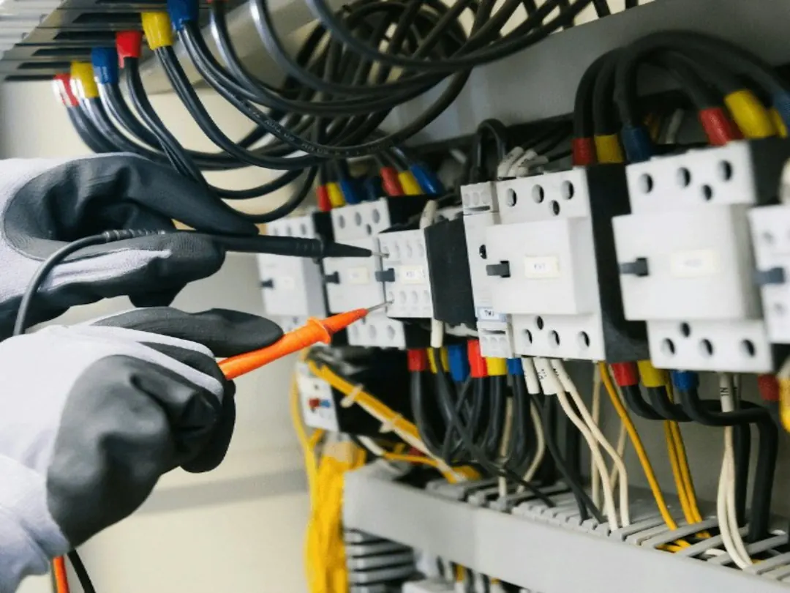

Electrical repairs in Paddington can involve a tripping safety switch, dead circuit, flickering light, older ceramic-fuse switchboard or renovation wiring. Describe when the fault occurs, which rooms lose power and what appliances are operating. Ask for the work scope and price before starting. If there is a burning smell, smoke or an injury, call 000 first. A Queensland contractor must provide a certificate of testing and compliance after installation work.
For homeowners comparing electrical repairs paddington options, the useful starting point is identifying the fault pattern, the type of home and whether the job is a repair, upgrade or renovation installation.
Electrical Repairs Paddington Explained
The published guidance from Electrician Paddington begins with the symptom rather than a guessed repair. A safety switch that trips immediately after reset, a dead section of the house, or lights that dim when an air conditioner starts can each point to a problem in the wiring or an appliance.
Record what was happening when the fault appeared. Note whether it occurs at night, during rain, when the oven or air conditioner starts, or after a particular appliance is connected. Also identify which rooms have lost power. These details give a licensed electrician a more useful starting point for fault finding.
If the switch still trips with everything unplugged, the wiring is more likely to be involved. Repeatedly resetting the switch does not identify the cause. The work should trace the affected circuit until the underlying problem is found and the scope is clear.
- Describe the first symptom and when it began.
- List affected rooms, power points, lights and appliances.
- Keep the agreed scope and price in writing before work starts.
Older Paddington homes need a different inspection approach
Paddington includes old timber Queenslanders, workers' cottages and terraces where wiring may have been added over decades. A fault can therefore sit in a cable run or connection that has been extended several times, rather than at the switchboard itself.
In a lined timber Queenslander, new cable may be routed through the roof space or under the floor to avoid opening the walls. That access decision affects how the work is planned and why a fault inside a wall cavity may take longer to reach than a problem at the board.
A ceramic-fuse board is another useful question to raise during an inspection. The published service information says these older boards do not have safety switches. A switchboard upgrade can put that protection across the whole house, subject to the electrician's assessment of the installation.
Ask which circuit is affected, where testing will occur, whether access through the roof or under the floor is needed, and what will be included in the written quote.
Separate urgent faults from defined upgrades
Not every electrical job has the same scope. Emergency work may involve making a fault safe and locating its source, while a new power point, lighting change or switchboard upgrade can usually be described as a defined installation. The quote should make that distinction visible.
| Job situation | Useful information to provide | Question to ask |
|---|---|---|
| Repeated tripping or dead circuit | Timing, affected rooms and appliances in use | What testing will identify the cause? |
| Power point, lighting or switch change | Position, access and nearby conditions | What exactly is included in the quoted scope? |
| Renovation or rewiring | Plans, new rooms, kitchen or bathroom requirements | Which new circuits or cable routes are needed? |
For another practical view of the same local repair topic, see the related Paddington electrical repair guide. It is still sensible to describe the actual property and fault rather than relying on a general job label.
Upgrades that support everyday use
Once the cause of a fault is understood, the next decision may be an upgrade. Extra power points can reduce reliance on multiple power boards, while moved switches, dimmers and weatherproof outdoor outlets can better suit how a home is used.
Lighting work may include halogen to LED changes, sensor lights, dimmers, flickering-light repairs or tracing blown globes. Smoke alarms may need replacement or installation, with interconnected alarms arranged so they sound together when one detects smoke.
An electric vehicle charger is a separate planning question. The published information says a home charger can be fitted in a garage or carport, with switchboard capacity work addressed first where required. Ask whether the existing board and available capacity suit the proposed charger.
Renovation work can range from new circuits for a kitchen or bathroom to a full rewire in an older home. The right scope depends on the existing wiring, access and the renovation plan.
Who this guide applies to
This guide is for owners and occupants of Paddington homes and nearby areas such as Red Hill, Milton, Petrie Terrace, Bardon and Ashgrove who need to decide what information to gather before engaging a licensed electrician.
It is particularly relevant when a safety switch keeps tripping, one part of the house has lost power, lights flicker, a switchboard still uses ceramic fuses, or a renovation needs new electrical circuits. It also applies to homeowners planning smoke alarm work, extra power points, lighting changes or an electric vehicle charger.
The business information states that electrical work beyond simple tasks such as changing a light bulb, tube or fuse, and resetting a breaker or safety switch, is for a licensed electrician in Queensland. Check the contractor's licence number in the online Electrical licence holder search and make sure the quote identifies who is responsible for the work.
- Describe the symptom. Write down what trips, goes dead, flickers or dims, and when it happens.
- Check the job category. Separate fault finding from a defined installation such as a power point, lighting change or switchboard upgrade.
- Discuss access. Ask whether the roof space, under-floor area, wall cavity or switchboard needs to be reached.
- Keep the paperwork. Confirm the scope and price before work begins, then keep the certificate of testing and compliance after installation work.
| Situation | Information to gather | Decision question |
|---|---|---|
| Repeated tripping | Timing, rooms and appliances | Is the cause in the wiring or an appliance? |
| Older switchboard | Fuse type and safety-switch arrangement | Would an assessment support an upgrade? |
| Renovation | Plans, access and new circuits | What work belongs in the written scope? |
Common questions
What should I tell an electrician about a tripping safety switch? Explain when it trips, which rooms lose power and whether everything was unplugged when it happened. If it still trips with appliances unplugged, wiring may be involved and the cause needs to be traced.
How can I check who is responsible for electrical work? The contractor doing the work must hold a Queensland electrical contractor licence. Ask for the licence number on the quote and check it in the online Electrical licence holder search.
Does every electrical job have the same price? No. Fault finding, adding power points and upgrading a switchboard involve different amounts of work. A clear scope and price should be agreed before work starts.
What happens after installation work is finished? The published guidance says a Queensland contractor must provide a certificate of testing and compliance after installation work. Keep that paperwork with the home's records.
This guide covers fault signs, older-home electrical work, quoting questions and common upgrade decisions in Paddington and nearby suburbs.